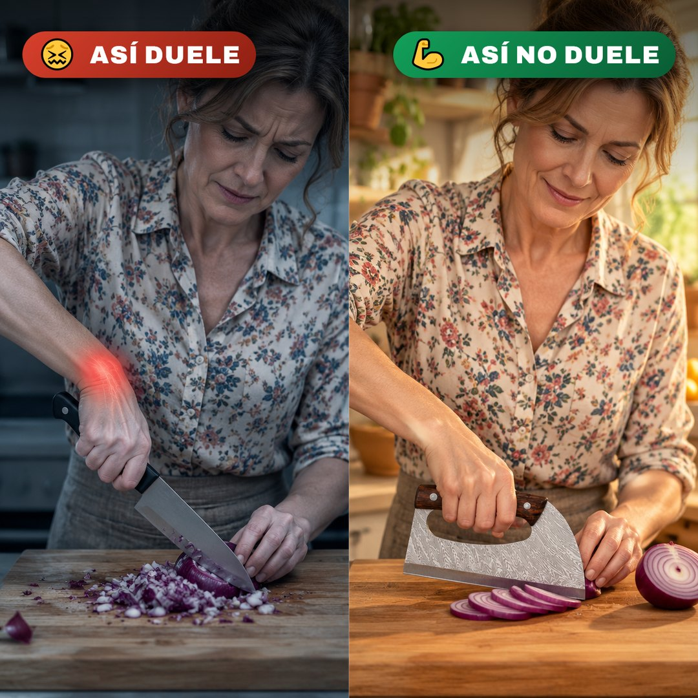
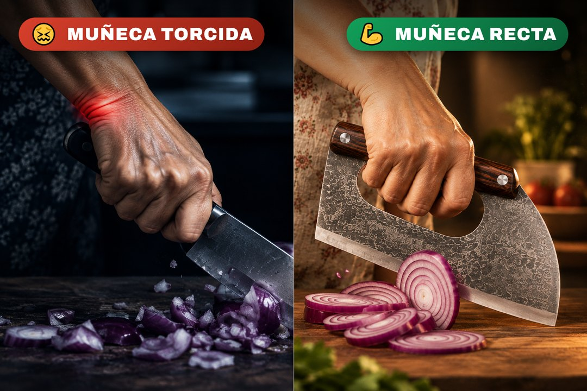
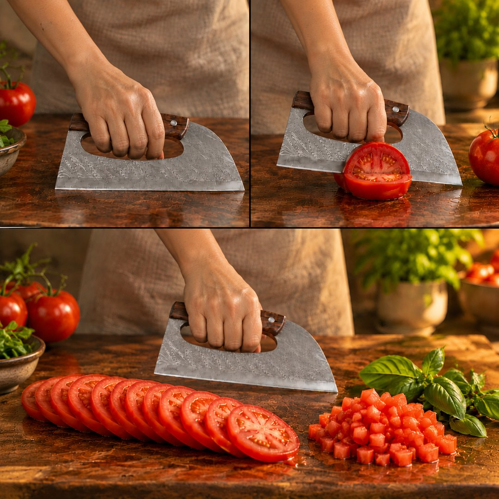
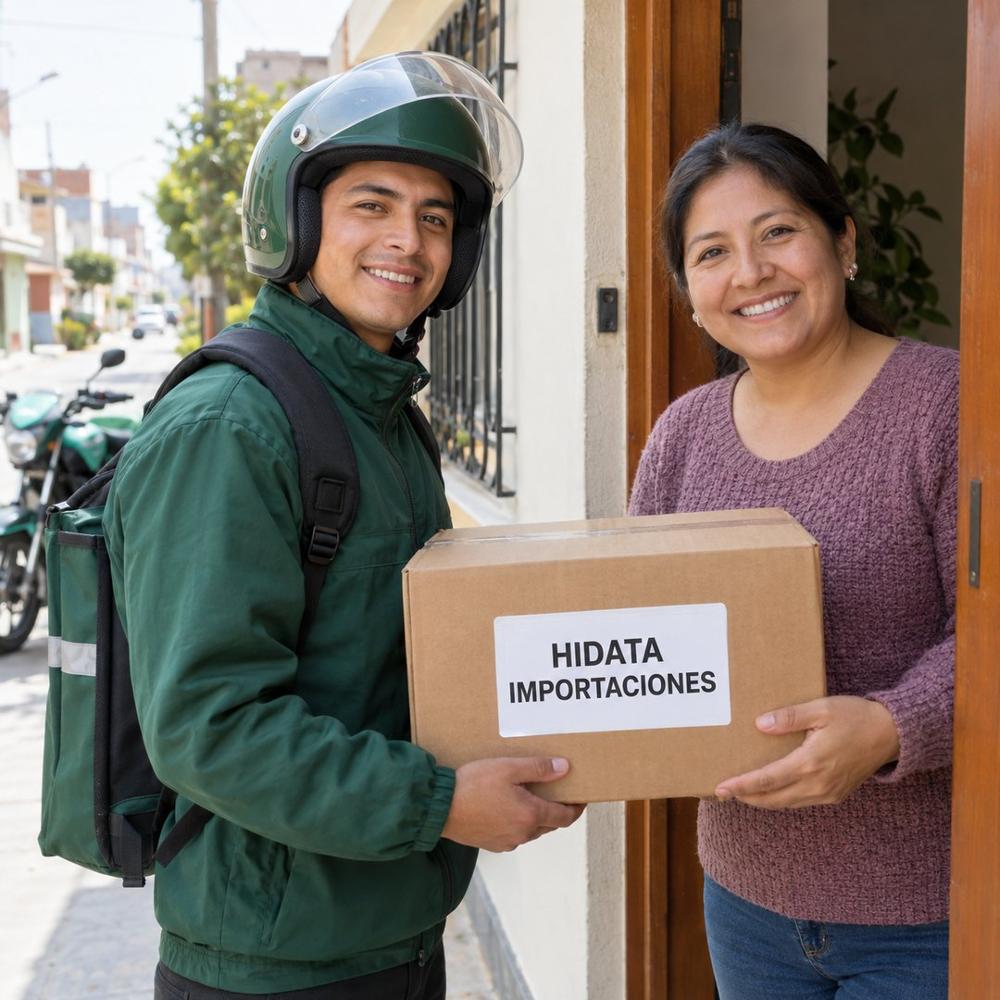

No es tu pulso.
Es dónde agarras
Y por eso duele después de picar un rato.

Llevas años echándole la culpa a tu pulso. No es tu pulso: en un cuchillo normal el mango va detrás del filo, así que cada corte lo haces girando la muñeca, como una palanca. Aquí la mano entra dentro de la hoja y baja recta. El acero hace el corte; tú solo lo acompañas.
😣Y no es solo el rato de picar: terminas, sueltas el cuchillo y ya no puedes ni cerrar bien la mano. Un día acabas pidiéndole a alguien de la casa que corte por ti.
✅Con el peso del acero haciendo la fuerza, terminas de cocinar con la mano entera.
Cuchillo común
La muñeca gira y hace de palanca en cada golpe.
Tu articulaciónaguanta todo
Con este
El brazo baja recto y el peso hace el corte.
Lo aguantael acero

Que cocinar
deje de dolerte
La mano va por encima del filo, no al lado. Por eso no resbala hacia ti.
El mismo tomate.
Otro cuchillo.
Izquierda: cuchillo común. Derecha: el nuestro.

Misma tabla, misma mano, mismo tomate. A la izquierda se aplasta y suelta el jugo en la tabla. A la derecha sale en rodajas parejas a la primera. Lo único que cambia es dónde está tu mano.
Lo que ganas desde el primer corte
- 💪Dejas de hacer fuerza para cortar
- ✋Terminas de picar con la mano entera
- 🎯Cortas parejo aunque no tengas técnica
- ⏱️Menos tiempo parada en la cocina
- 🔒Mantiene el filo mucho más tiempo
- 🎁Viene con funda para guardarlo seguro
Todo esto
por S/ 79
Hoja forjada, mango con triple remache y funda incluida.
Míralo cortando
carne con hueso
El peso del acero baja recto y el corte sale solo. Tú no aprietas.
Lo viste.
Ahora pídelo
No hay técnica que aprender. Apoyas el filo, dejas caer el peso, y ya está cortado.
Se agarra así.
Y ya está.
Cuatro pasos. Ninguno tiene truco.

- ✋Mete los dedos índice y medio en el hueco de la hoja.
- 👍Apoya el pulgar en el lomo para dirigir el corte.
- 🔻Deja caer el peso: no hace falta empujar.
- 💧Lávalo a mano y sécalo. Nunca al lavavajillas.
Así de fácil
es usarlo
Cuatro pasos y ninguno es fuerza. Si no es lo que esperabas, 7 días para devolverlo.
Uno solo para
toda la cocina
Un filo curvo largo hace lo de tres cuchillos del cajón.
Uno solo.
Y ya no cambias
Carne con hueso, verduras y ajo con el mismo filo. Los otros tres se quedan en el cajón.
Si no te gusta,
devolvemos todo
No arriesgas nada: pagas al recibirlo y lo pruebas en tu cocina.
Sin riesgo:
pagas al recibir
Lo recibes, lo abres y lo pruebas. Recién ahí sueltas el dinero.
Lo que todos preguntan
Las dudas que llegan por WhatsApp, resueltas antes de que las escribas.

💵 ¿De verdad pago cuando lo recibo?
En Lima y Callao, sí: haces el pedido, te lo llevamos a tu dirección y recién ahí pagas. En provincias enviamos por agencia y se adelantan S/ 40 para cubrir el envío; el resto lo pagas al recoger tu pedido en la agencia.
🚚 ¿Cuánto demora en llegar?
En Lima, de 1 a 3 días. En provincias, de 3 a 7 días hábiles. Te avisamos por WhatsApp cuando sale tu pedido.
🔪 ¿Viene afilado?
Sí, viene con filo de fábrica y listo para usar. Con el uso hay que reavivarlo con una piedra de afilar, igual que cualquier cuchillo bueno.
🧽 ¿Se puede lavar en lavavajillas?
Mejor no. El mango es de madera y la hoja de acero forjado: lávalo a mano y sécalo después. Así te dura años.
💪 ¿Es muy pesado para una mano de mujer?
Pesa, y esa es la gracia: el peso hace el corte por ti. Al ir agarrado desde el hueco de la hoja, la muñeca trabaja mucho menos que con un cuchillo normal.
🧾 ¿Hacen factura?
Sí. Escríbenos por WhatsApp con tus datos de facturación cuando hagas el pedido.
Mañana
en tu cocina
Y la próxima vez que cocines para todos, terminas con la mano entera.
📐 Medidas y materiales exactos
Casi nadie las publica. Aquí están, para que sepas qué te llega.

Acero forjado
La hoja se forja en caliente en vez de troquelarse de una plancha. Eso reordena el grano del acero y le da a la pieza una densidad que se nota al levantarla: el peso trabaja a tu favor y el filo aguanta muchos más cortes antes de pedir piedra.
Madera con triple remache
El mango va sujeto a la espiga con tres remaches de acero pasados de lado a lado. Es la unión que no se afloja con los años ni con el agua caliente, a diferencia de los mangos de plástico pegados que terminan girando en la mano.
Funda protectora
Incluida. Guarda el filo cubierto dentro del cajón: protege la hoja del roce con otros cubiertos y, sobre todo, protege tu mano al buscarlo a ciegas.
Hoja curva de 8.5 cm
El filo entra por un punto y va abriendo el corte al balancearse. Pasa el tomate sin reventarlo y separa el pollo por la articulación en vez de astillar el hueso.
Completa tus datos para finalizar tu pedido
🚚 Envío Gratis · 🔒 Pago Contra Entrega
✓ Pedido registrado
La oferta se retira en 5:00